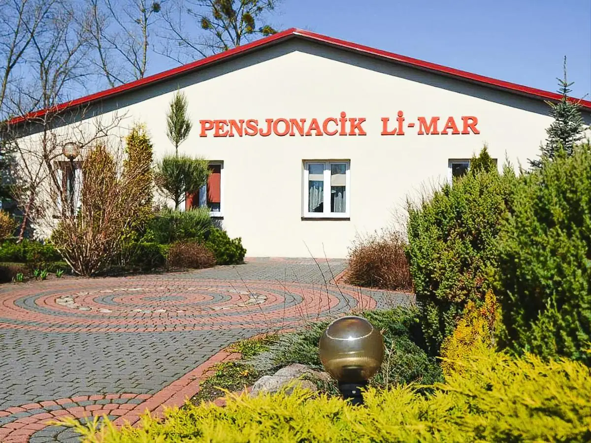
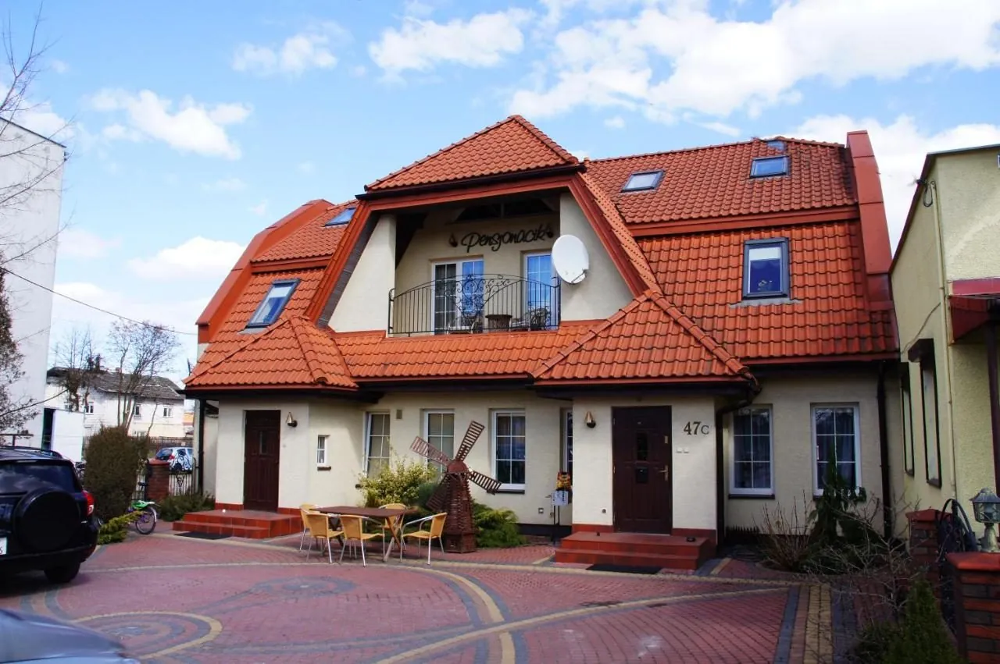
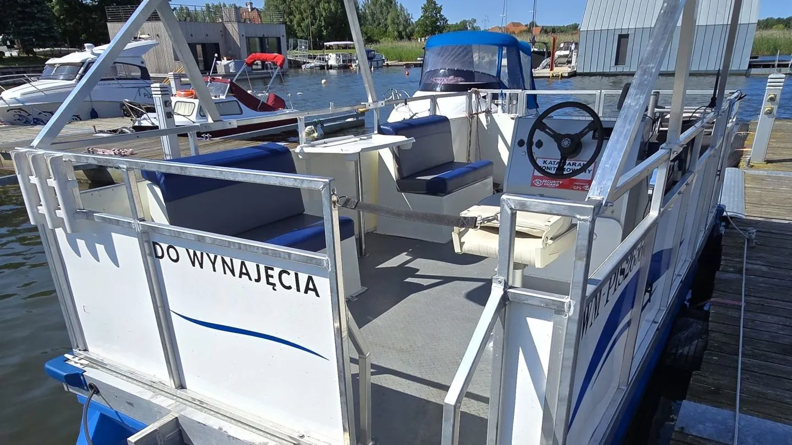
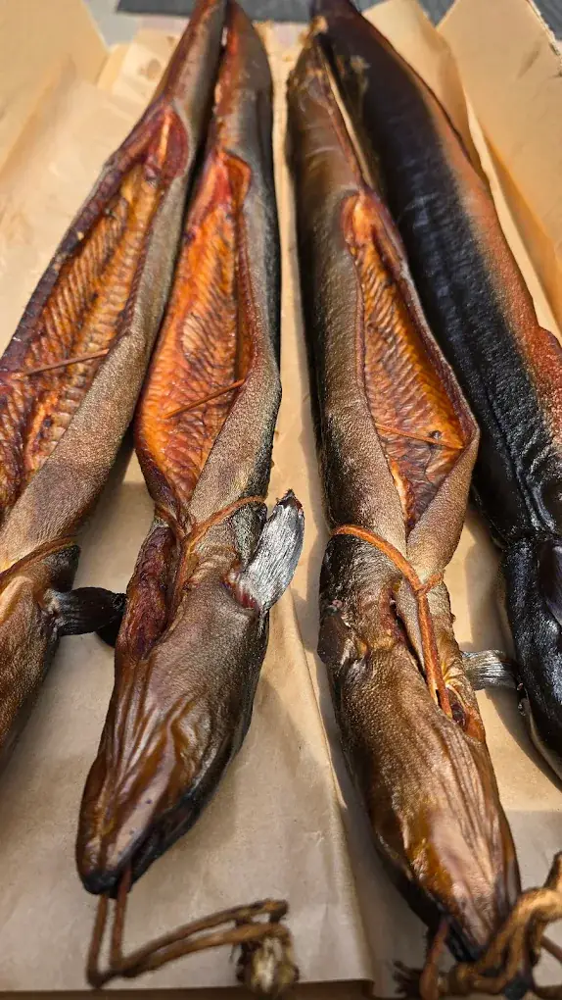
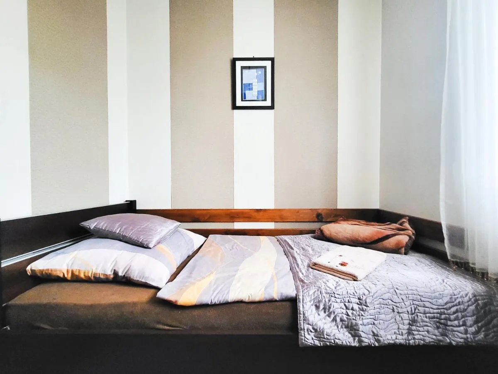
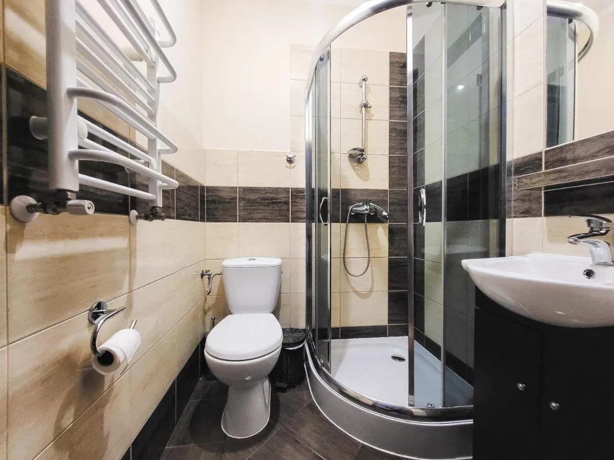

Pensjonat Li-Mar
Położony w spokojnej okolicy, oferuje ciszę i idealne warunki do odprężenia. Przytulne pokoje zapewniają komfortowy wypoczynek.
Czytaj dalejSpokój, cisza i przytulne pokoje w sercu Mazur — idealna baza na urlop, weekend nad jeziorem i podróże służbowe.
Dwa przytulne pensjonaty, łodzie na wynajem i własna wędzarnia — wszystko w Piszu i okolicach.

Położony w spokojnej okolicy, oferuje ciszę i idealne warunki do odprężenia. Przytulne pokoje zapewniają komfortowy wypoczynek.
Czytaj dalej
Elegancko urządzone pokoje 2,4 km od jeziora Roś. Spokój, zieleń i komfort — dla rodzin i podróżujących.
Czytaj dalej
Katamaran, łodzie motorowe i niezapomniane przygody na wodzie. Pisz i okolice.
Czytaj dalej
Zapraszamy do pensjonatów położonych w urokliwym mieście Pisz, otoczonym malowniczymi krajobrazami Krainy Wielkich Jezior Mazurskich. Nasz obiekt oferuje doskonałą bazę zarówno dla podróżujących w interesach, jak i dla rodzin pragnących wypoczynku w sercu natury.

| Pokój | Cena za noc |
|---|---|
| Pokój 1-osobowy | 150 zł |
| Pokój 2-osobowy | 200 zł |
| Pokój 3-osobowy | 270 zł |
| Pokój 4-osobowy | 320 zł |
Pobyty długoterminowe i firmy — atrakcyjne ceny indywidualne. Zadzwoń, a dostosujemy ofertę do Twoich potrzeb.
Wszystkie nasze pokoje są wyposażone w telewizor z płaskim ekranem z dostępem do kanałów telewizji kablowej. Każdy pokój posiada własną łazienkę z prysznicem oraz zestawem ręczników.
Telewizor z płaskim ekranem w każdym pokoju.
Prysznic i zestaw ręczników w każdym pokoju.
Internet bezprzewodowy w pomieszczeniach ogólnodostępnych.
Bezpieczne miejsce dla samochodu — także na kilka dni.
Kuchenka gazowa, mikrofalówka i lodówka do dyspozycji Gości.
Grill, taras i zieleń wokół obiektu.

Nasza obsługa dokłada wszelkich starań, aby pobyt był niezapomniany. Zawsze służymy pomocą i chętnie udzielamy informacji o lokalnych atrakcjach i możliwościach spędzania czasu. Personel jest do dyspozycji Gości na każdym etapie pobytu — z nami każdy dzień na Mazurach będzie wyjątkowy.
KontaktNasze pensjonaty cieszą się ogromnym uznaniem — blisko 300 opinii na platformie Booking.
Bardzo dobra lokalizacja na jedną noc, kiedy chcesz zrobić pętlę mazurską na rowerze. Jest możliwość pozostawienia samochodu na parkingu na kilka dni, kiedy ty sobie pedałujesz wokół jezior mazurskich.
Bardzo niska cena w stosunku do standardu pokoju. Super cena.
Duża swoboda poruszania się w obiekcie i po terenie, możliwość zakupu wędzonych na bieżąco ryb, pomocna obsługa.
Bardzo czysto, ładny wystrój pokoju, schludnie, nowoczesny telewizor. Kuchnia z kuchenką gazową, mikrofalą i lodówką. Odbiór klucza ze skrzyneczki na wejściu za pomocą kodu. Jest superowo, krótko mówiąc.
Odbiór kluczy i rozliczenie za pokój — bez problemu. Pokój czysty, wszystko co niezbędne na krótki pobyt. Parking bezpłatny przy pensjonacie. Teren wokół — dużo zieleni, ławeczki. Polecam.
Super opcja dla podróżujących po Mazurach.
Prowadzimy własną wędzarnię — świeżo wędzone ryby to idealny posiłek w otoczeniu natury. Dla fanów aktywnego wypoczynku oferujemy profesjonalny wynajem łodzi wędkarskich oraz komfortowy katamaran, doskonały na wspólne rejsy i relaks na fali. To idealne miejsce zarówno dla profesjonalnych wędkarzy, jak i rodzin szukających spokoju nad samą wodą.
Tak — obiekt oferuje bezpłatny parking.
Wi-Fi jest dostępne w pomieszczeniach ogólnodostępnych i jest bezpłatne.
Tak, obiekt dysponuje sprzętem do grillowania.
Zwierzęta nie są akceptowane w obiekcie.
Obiekt nie dysponuje udogodnieniami dla niepełnosprawnych.